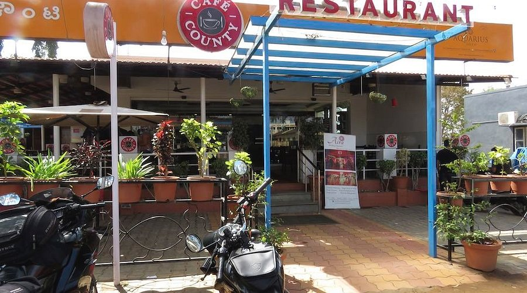
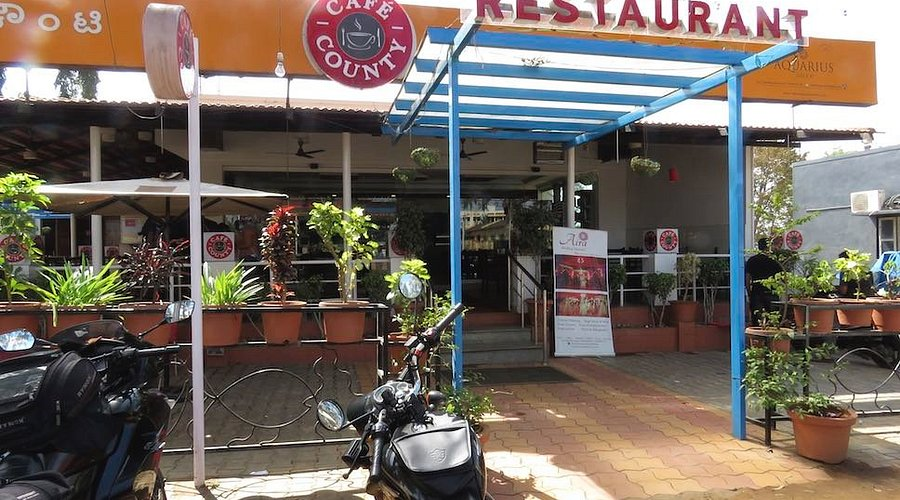

About Us
Spicy Hub is a family restaurant proudly serving authentic South and North Indian cuisine since 2015. We are committed to delivering rich flavors, traditional recipes, and unforgettable dining experiences.
Our dishes are prepared using fresh ingredients and time-honored cooking methods. With a warm ambience, hygienic kitchen practices, and friendly service, Spicy Hub is the perfect place for families, friends, and food lovers.
Whether you visit us for a quick meal or a special occasion, we strive to deliver consistent quality, exceptional service, and a truly satisfying dining experience every time.
Contact Us


 
